Lastest Update 2025.07.18
[방법1. 인게임 문의]
인게임에서 문의하는게 제일 빠르고 간단함
먼저 준비물이있음
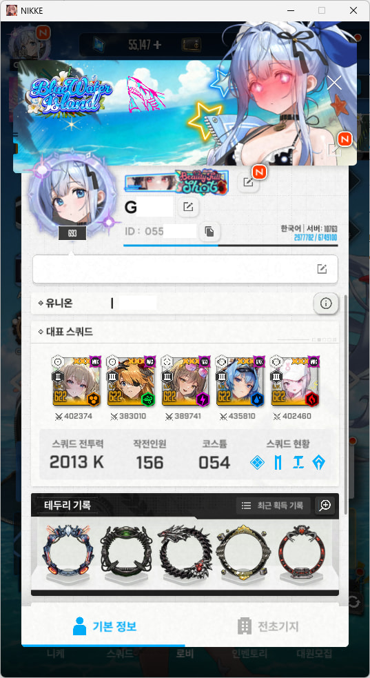
@준비물1번
인게임 좌측상단을 누르면 나오는 내 프로필 이거 스크린샷해서 저장해둬야함
@준비물2번
내 인피니티 계정 아이디
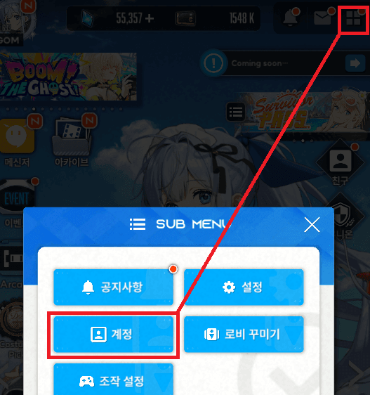
우측상단 네모 > 계정
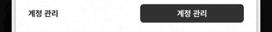
계정 관리에 들어가보면
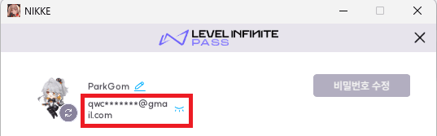
맨위에이렇게 인피니티 계정 정보가 뜰꺼임
아이디옆에 눈모양 누르면 전부 보이니깐 이걸 어디다가 기록해둬야함
만약에 이게 없다면 연동을 해야함
아무 이메일 있으면 연동가능
연동안되어있으면 비밀번호 수정 대신 연동 버튼이 있을꺼임
참고로 연동해제 신청이후부터는 이 아이디로만 로그인해야함
소셜연동해제를 신청하면 구글, 페북, 라인, 애플 등 모두 동시에 연동끊김
그럼 로그인할 수 있는 수단이 이것밖에 없는거임
도중에 다른 소셜연동으로 로그인하면 연동해제 안해줌
앞으로 소셜 연동 해제를 성공할때까지
이 버튼들은 절대!! 누르지않을꺼임
누르면 바로 신청취소됨
@준비물 3번
레벨 인피니티 공식 홈페이지에 접속한다
https://pass.levelinfinite.com/
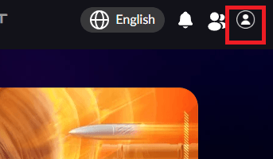
우측상단 프로필을 눌러 로그인한다 (비밀번호로 로그인하는 버튼이 따로있음)
그리고 Account Management로 들어간다
계정 관리라고 적혀있기도함
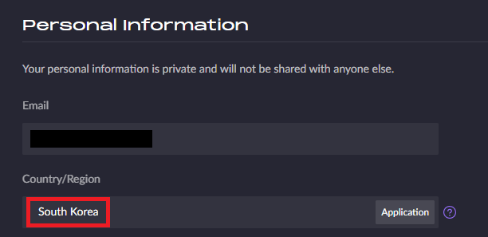
들어가면 국가/지역 항목에
대한민국(South Korea)이 적혀있어야한다.
만약 대한민국이 아니라면 오른쪽에 application버튼을 눌러 초기화신청이 가능하다
초기화 신청하고 몇일안에 인피니티 계정으로 로그인하면 국가를 선택하라는 창이나옴
초기화할때 인피니티 이메일로 인증코드를 받아야하는데
본인이 일회용 메일이라서 인증 코드를 못받는경우 아래 링크로 인피니티 계정을 삭제하던가
혹은 인게임 고객센터에 문의해서 국가지역을 변경을 신청하면됨
국가지역 변경신청을해서 대한민국으로 만들고 이후 과정을 진행해야함
https://gall.dcinside.com/mgallery/board/view/?id=gov&no=707516
@준비물 4번
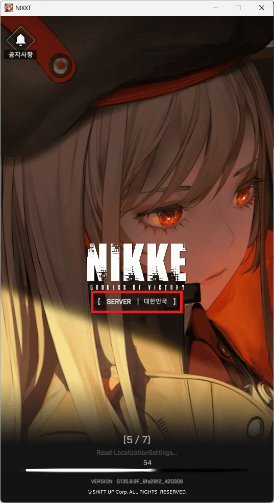
로그인할때 본인 서버가 어딘지 나옴 이거 확인해줘
준비물 끝
이제 인게임 고객센터에 연동 해제 문의를 하러갈꺼임
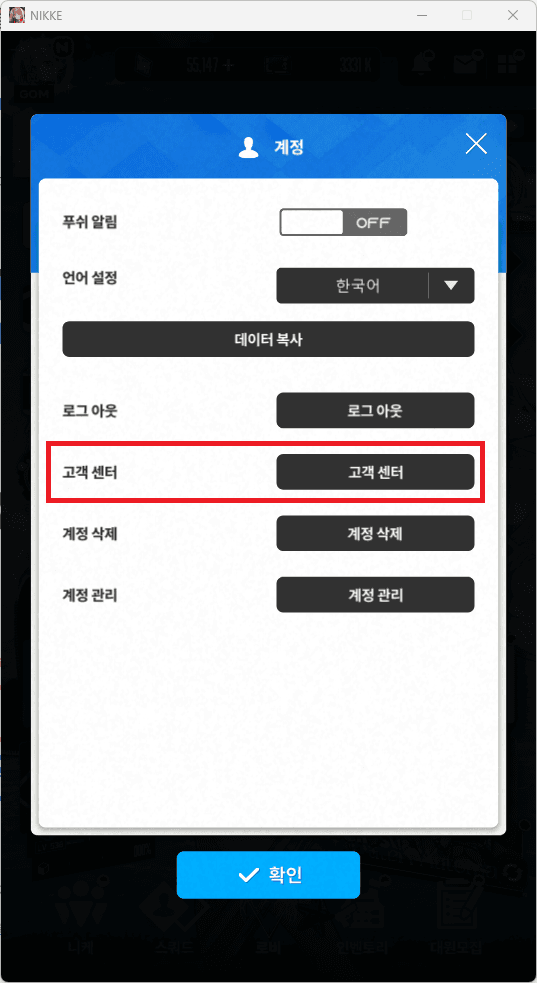
고객센터를 누르면 새로운 창이 하나뜸
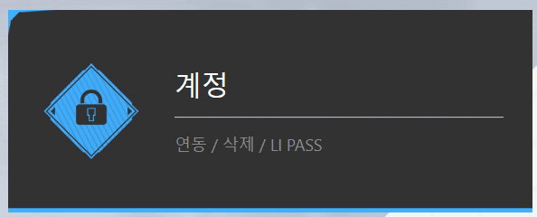
클릭
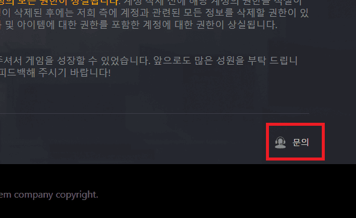
클릭
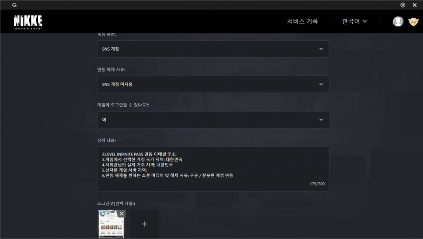
위에서부터 하나씩 똑같이 선택해주고
상세 내용에 이걸 복붙한다.
1.게임 내 UID 및 지휘관 닉네임이 표시된 스크린샷: 첨부함
2.LEVEL INFINITE PASS 연동 이메일 주소:
3.게임에서 선택한 계정 국가 지역: 대한민국
4.지휘관님의 실제 거주 지역: 대한민국
5.선택한 게임 서버 지역:
6.연동 해제를 원하는 소셜 미디어 및 해제 사유: 구글 / 잘못된 계정 연동
여기서 2랑 5만 채우면되는데
2는 2번 준비물때 기록한 계정 적으면됨
5는 4번 준비물때 확인했을꺼임
아까 찍은 1번 준비물 사진을 첨부해주고
제출하면 끝
보통 1영업일 정도안에 답신옴